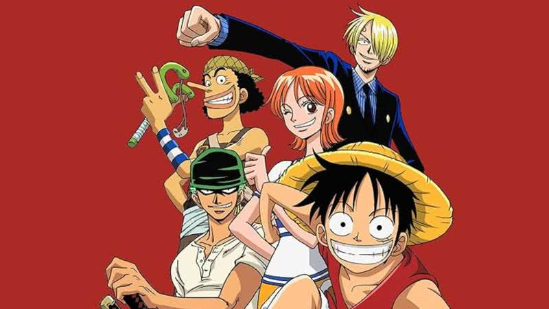

One Piece é uma das maiores e mais aclamadas franquias de anime e mangá, criada por Eiichiro Oda. A história segue as aventuras de Monkey D. Luffy, um jovem pirata determinado a encontrar o lendário tesouro "One Piece" e se tornar o Rei dos Piratas. Para alcançar seu objetivo, ele recruta uma tripulação diversificada, composta por personagens com sonhos e ambições próprios. Ao longo da jornada, Luffy e seus amigos enfrentam vilões poderosos, exploram ilhas desconhecidas e desafiam o Governo Mundial, sempre em busca de liberdade.
A trama de One Piece se destaca por sua riqueza e profundidade, misturando ação, comédia, drama e momentos de reflexão. A construção do mundo é uma das suas maiores qualidades, com ilhas, culturas e personagens variados que tornam o universo vasto e envolvente. Além disso, a narrativa explora temas universais como amizade, lealdade, justiça e a busca pelo propósito de vida. A obra também critica o autoritarismo e a opressão, refletindo sobre as lutas contra forças maiores em busca de um futuro melhor.
O mangá de One Piece foi lançado em 1997 na revista Weekly Shonen Jump e rapidamente se tornou um dos mais vendidos da história, com mais de 500 milhões de cópias em circulação. Oda é conhecido por seu estilo único de arte, com personagens expressivos e cenas de ação dinâmicas. A complexidade dos enredos e subtramas, que se conectam ao longo dos anos, proporciona uma experiência envolvente para os leitores. O sucesso do mangá também se deve à sua habilidade de equilibrar humor e emoção, além da evolução constante dos personagens.
A adaptação para live action de One Piece, produzida pela Netflix e lançada em 2023, gerou grande expectativa. A série foi cuidadosamente planejada para manter a fidelidade visual e emocional ao material original, com a participação ativa de Eiichiro Oda no processo de adaptação. A produção, que conta com Iñaki Godoy como Luffy, conseguiu equilibrar a grandiosidade da história com momentos mais leves e divertidos. No entanto, a série gerou opiniões divididas entre os fãs, especialmente quanto às alterações e escolhas feitas na adaptação de certos arcos.
One Piece não é apenas uma obra de entretenimento, mas também uma grande influência cultural. A série inspirou uma ampla gama de produtos, como brinquedos, videogames, filmes e músicas, solidificando sua posição como uma das maiores franquias da história. Sua base de fãs é extremamente fiel, engajando-se em atividades como cosplays, convenções e criação de conteúdo relacionado, como fanfics e discussões online. A popularidade da obra transcendeu o universo do entretenimento, tornando-se parte de um movimento cultural global.
Além disso, a influência de One Piece pode ser observada em outras produções de entretenimento que se inspiraram em sua estrutura narrativa e construção de mundos. Muitos animes e mangás posteriores adotaram o formato de aventuras extensas e universos expansivos, fazendo referência direta ao trabalho de Eiichiro Oda. Isso demonstra o impacto duradouro de One Piece, que ajudou a moldar uma geração inteira de criadores e fãs, tornando-se um ícone no mundo dos quadrinhos e animações.